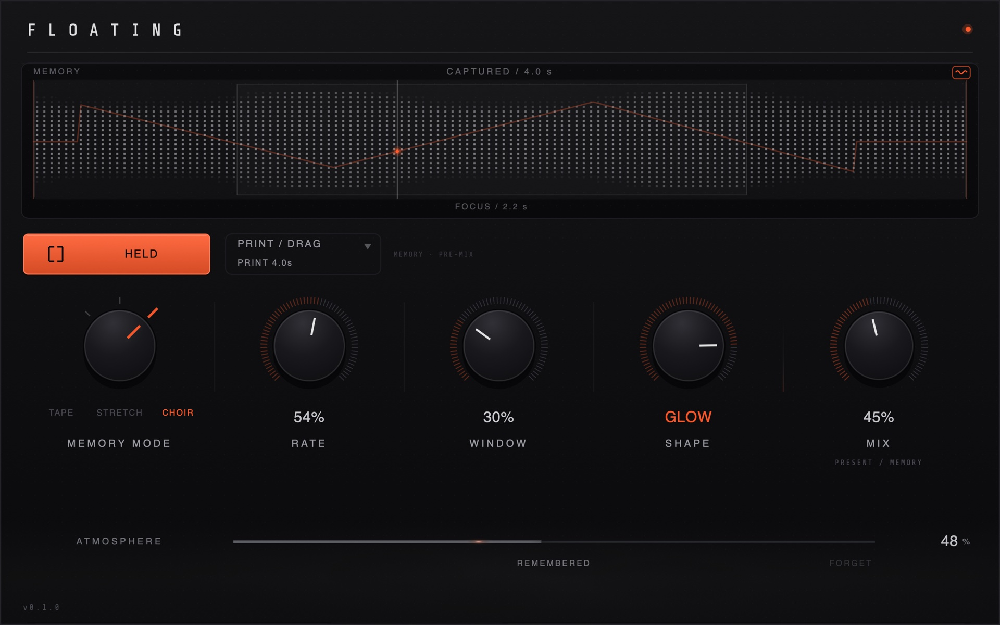

FLOATING listens to what you just played, and turns it into Memory — it holds the phrase while you decide what to do with it.
Capture — Tape/Stretch/Choir change how it sounds — Atmosphere places it in space. The original stays untouched.
FLOATINGMEMORY INSTRUMENT · BY FLØA
Capture a recent moment, shape how it is remembered, place it into atmosphere. Audio Unit and VST3, for macOS and Windows.

01What it does
FLOATING listens to what you just played, and turns it into Memory — it holds the phrase while you decide what to do with it.
Capture — Tape/Stretch/Choir change how it sounds — Atmosphere places it in space. The original stays untouched.
A transport-shaped Memory. Shape moves through reverse, slow, normal and faster local movement, while the phrase keeps its identity.
REV · SLOW · NORMAL · FAST
A sliced, time-shaped Memory that runs from reverse through suspended motion into forward movement. It can hold a moment still, or send the phrase travelling.
REV · FREEZE · FORWARD
A time-locked harmonic companion around the held Memory. The original anchor stays present as Shape moves from lower body toward a brighter upper voice.
BODY · GLOW
02The story
For a long time this was a different plugin entirely. A delay. Then a texture engine. I kept building toward something, then finding out it wasn’t quite the thing.
At some point I stopped trying to design a feature list and started asking a simpler question: what actually happens right after you play something you like? You lose it. You reach for undo, or you just remember it wrong.
FLOATING came from trying to hold onto that moment honestly — not clean it up, not perfect it, just keep it long enough to do something with it.
Almost everything in here got rebuilt at least once. Some of it more than that. There were versions that measured better and sounded worse, and I threw those out even when the numbers said keep them. If something didn’t feel true when I actually listened to it, it didn’t ship — no matter how long it took to get there.
This is where it landed. Beta, still rough at the edges, still mine to keep shaping — but it’s the first version I’ve actually wanted to hand to someone else.
— Fløa
03Get the beta
Free, no account, no key. Download it and it works. The installer and the plug-in are unsigned, so your system will ask once whether you meant to open them — the install guides walk through exactly that.
macOS
Installer package · Audio Unit + VST3
.pkg · 3.4 MB · Apple Silicon (M1 or later) · macOS 11+
Download for macOSNothing is gated — the downloads above are open, and you do not need to ask for access. But this is a pre-release build shared for testing rather than a finished product: it is unsigned, it is version 0.1.0, and some things will be wrong. Each install guide lists what is known to be missing on that platform. If something feels off, confusing, or just plain wrong, I want to hear about it.
Apple Silicon only this round — Intel support is coming, and the installer will decline to run rather than install something that would not load. If you want to verify what you downloaded, SHA256SUMS.txt is on the release alongside the files.
04Support development
FLOATING is made by one person, and the beta is free. If you want to put something behind it, it goes directly into the time this takes.
05Contact
Bug reports, confusion, and “this should work differently” are all equally welcome. The most useful report says what you did, what you expected, and what happened instead.